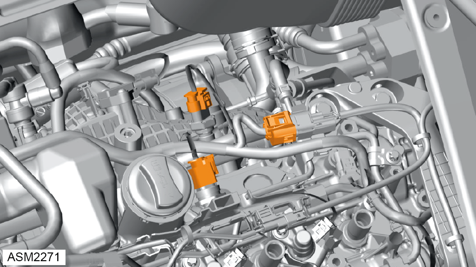
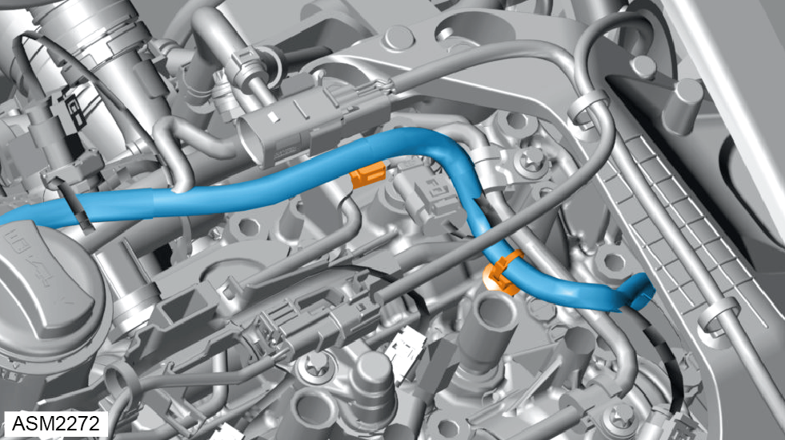
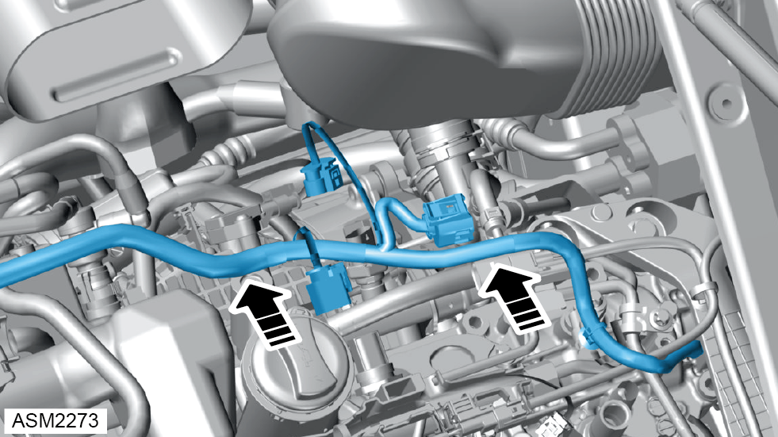
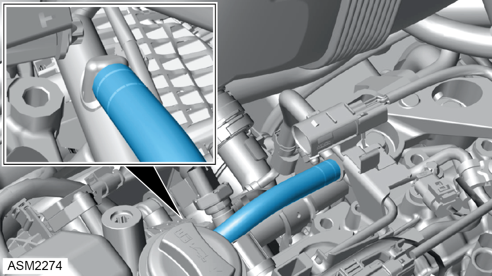
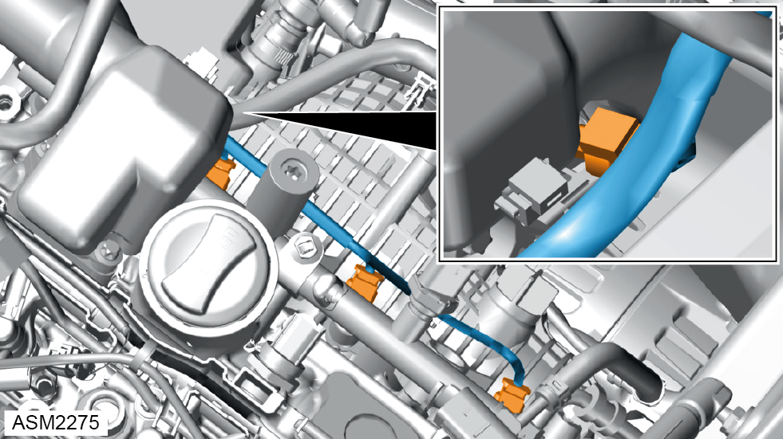
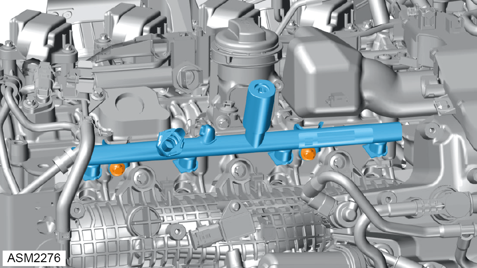
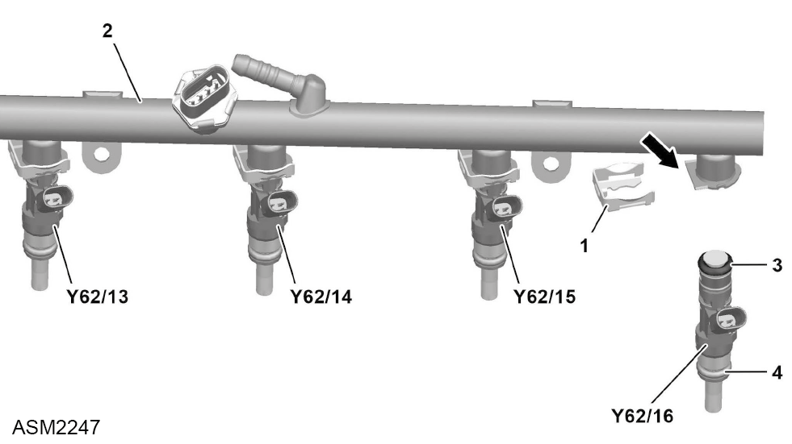
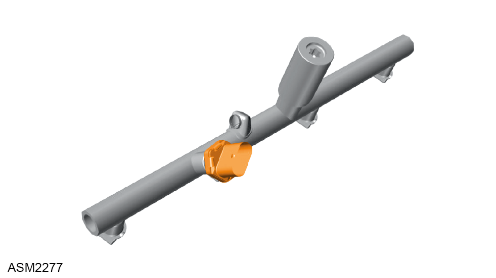

Injector Rail - Indirect - 4 Cylinder
Print
Operation Code: 42.05.05-02
Important Information
 DANGER: Risk of explosion caused by fuel igniting, risk of poisoning caused by inhaling and swallowing fuel as well as risk of injury to eyes and skin caused by contact with fuel. Keep ignition sources away from work area. Use suitable and appropriately labelled containers for fuels. Wear protective clothing when handling fuel.
DANGER: Risk of explosion caused by fuel igniting, risk of poisoning caused by inhaling and swallowing fuel as well as risk of injury to eyes and skin caused by contact with fuel. Keep ignition sources away from work area. Use suitable and appropriately labelled containers for fuels. Wear protective clothing when handling fuel.
DANGER: Risk of explosion caused by fuel igniting. Risk of injury to skin and eyes caused by fuel spraying out at high pressure. Keep ignition sources away from work area. Do not carry out work on fuel system when it is pressurized.
 WARNING: Engine oil is a toxic substance and can be lethal if ingested. Wear protective gloves, protective clothing and safety glasses.
WARNING: Engine oil is a toxic substance and can be lethal if ingested. Wear protective gloves, protective clothing and safety glasses.
Removal
- Depressurise fuel system. Refer to procedure.
- Disconnect battery. Refer to procedure.
- Remove bolts (x8) securing coil packs to engine.
- Remove coil packs (x4).

- Release electrical connectors from fuel pressure sensors (x2) and pre-cat oxygen sensor.

- Release clips securing fuel pressure sensor electrical harness to engine.

- Move fuel pressure sensor electrical harness aside.

- Disconnect fuel hose from injector rail.
NOTE: Plug injector rail and connections to prevent ingress of dirt.
NOTE: Be prepared to catch any excess fluid.

- Disconnect harness connectors (x4) from injectors.
- Clean injector rail area with solvent and dry with compressed air.

- Remove bolts (x2) securing injector rail to cylinder head. Torque: 8 Nm.
NOTE: Engine shown removed from vehicle for clarity.
- Remove fuel rail and injectors (x4) from cylinder head.
NOTE: Plug injector holes in cylinder head to prevent ingress of dirt.
Do not proceed further if removing for access only.
- Mark position of each injector relative to rail.
NOTE: Each injector must be refitted to the same cylinder position.

- Remove retaining clips (1) (x4) securing injectors (Y62) to injector rail (2).
- Remove injectors (x4) from injector rail.
NOTE: Remove and discard O-rings (3 and 4).

- Remove fuel pressure sensor from injector rail. Torque: 20 Nm.
Installation
- Installation is the reverse of removal procedure except for the following:
- Renew discarded O-rings.
- Apply light coating of oil to fuel injector O-rings.
 CAUTION: Take care not to damage O-rings.
CAUTION: Take care not to damage O-rings.
- Apply clean engine oil to threads and mating surfaces of fuel pressure sensor.
- Perform a diagnostic read and clear error memory using Lotus Insight tool.